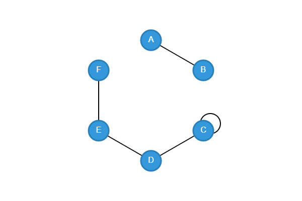
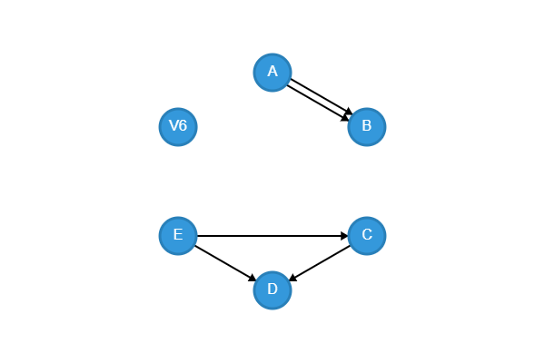

La Teoría de Gráficas
La teoría de gráficas es una rama de las matemáticas que estudia las relaciones entre objetos mediante estructuras llamadas gráficas, formadas por vértices (nodos) y aristas (conexiones). Se usa para modelar redes, caminos, conexiones y estructuras en campos como la informática, la ingeniería, la biología y las ciencias sociales.
Matrices NO Dirigidas
En la teoría de gráficas, las matrices nos ayudan a representar formalmente las conexiones entre vértices y aristas. Estas representaciones facilitan el análisis estructural de una gráfica.
Matriz de Incidencia
Esta matriz muestra qué vértices están conectados a qué aristas. Cada columna representa una arista y cada fila un vértice. Se coloca un 1 si el vértice está conectado a la arista. Columnas repetidas indican líneas paralelas. Filas de ceros indican vértices aislados.
Ejemplos de Matrices
La matriz de inicidencia asociada a la gráfica:

Matriz de Incidencia
| e1 | e2 | e3 | e4 | e5 | |
|---|---|---|---|---|---|
| A | 1 | 0 | 0 | 0 | 0 |
| B | 1 | 0 | 0 | 0 | 0 |
| C | 0 | 1 | 0 | 1 | 0 |
| D | 0 | 1 | 1 | 0 | 0 |
| E | 0 | 0 | 1 | 0 | 1 |
| F | 0 | 0 | 0 | 0 | 1 |
Matriz de Adyacencia
Representa directamente las conexiones entre pares de vértices. Es una matriz cuadrada donde se coloca un 1 si hay una conexión directa entre dos vértices. Los bucles se reflejan con un 1 en la diagonal. Las gráficas desconectadas tendrán filas y columnas de ceros.
Ejemplos de Matrices
La matriz de adyacencia asociada a la gráfica:
Matriz de Adyacencia
| A | B | C | D | E | F | |
|---|---|---|---|---|---|---|
| A | 0 | 1 | 0 | 0 | 0 | 0 |
| B | 1 | 0 | 0 | 0 | 0 | 0 |
| C | 0 | 0 | 1 | 1 | 0 | 0 |
| D | 0 | 0 | 1 | 0 | 1 | 0 |
| E | 0 | 0 | 0 | 1 | 0 | 1 |
| F | 0 | 0 | 0 | 0 | 1 | 0 |
Matriz de Accesibilidad
Indica si existe al menos un camino entre dos vértices, sin importar la cantidad de pasos. Se construye a partir de las potencias de la matriz de adyacencia. Si hay un camino, se marca con un +. Una matriz completamente llena de + indica que la gráfica está totalmente conectada.
Ejemplos de Matrices
La de accesibilidad asociada a la gráfica:
Matriz de Accesibilidad
| A | B | C | D | E | F | |
|---|---|---|---|---|---|---|
| A | + | + | 0 | 0 | 0 | 0 |
| B | + | + | 0 | 0 | 0 | 0 |
| C | 0 | 0 | + | + | + | + |
| D | 0 | 0 | + | + | + | + |
| E | 0 | 0 | + | + | + | + |
| F | 0 | 0 | + | + | + | + |
Matrices en Digráficas (Gráficas dirigidas)
Las digráficas son gráficas donde las aristas tienen una dirección específica. Las siguientes matrices nos ayudan a representarlas y analizarlas.
Matriz de Incidencia
Representa la dirección de las conexiones entre vértices. Se usa un 1 para indicar que una arista sale de un vértice, y un –1 si llega. Las columnas iguales representan líneas paralelas. Las sumas positivas y negativas por renglón indican grados de salida y entrada respectivamente.
Ejemplos de Matrices
La matriz de incidencia de la gráfica:
B, A->B, E->C, C->D, E->D." title="Imagen de Gráfica Dirigida.">| e1 | e2 | e3 | e4 | e5 | |
|---|---|---|---|---|---|
| A | 1 | 1 | 0 | 0 | 0 |
| B | -1 | -1 | 0 | 0 | 0 |
| C | 0 | 0 | 1 | -1 | 0 |
| D | 0 | 0 | -1 | 0 | -1 |
| E | 0 | 0 | 0 | 1 | 1 |
| V6 | 0 | 0 | 0 | 0 | 0 |
Matriz de Adyacencia
Refleja si hay una línea dirigida entre dos vértices. Si existe una conexión de i a j, se coloca un 1. Una fila en ceros es un vértice sin salidas (final), una columna en ceros indica un vértice sin entradas (inicial).
Ejemplos de Matrices
La matriz de adyacencia de la gráfica: B, A->B, E->C, C->D, E->D." title="Imagen de Gráfica Dirigida.">| A | B | C | D | E | F | |
|---|---|---|---|---|---|---|
| A | 0 | 1 | 0 | 0 | 0 | 0 |
| B | 0 | 0 | 0 | 0 | 0 | 0 |
| C | 0 | 0 | 0 | 1 | 0 | 0 |
| D | 0 | 0 | 0 | 0 | 0 | 0 |
| E | 0 | 0 | 1 | 1 | 0 | 0 |
| V6 | 0 | 0 | 0 | 0 | 0 | 0 |
Matriz de Accesibilidad
Muestra si existe al menos un camino dirigido entre dos vértices. Si hay un camino, se coloca un +; si no, se deja en 0. Si toda la matriz está llena de +, significa que todos los vértices están conectados por algún camino.
Ejemplos de Matrices
La matriz de accesibilidad de la gráfica: B, A->B, E->C, C->D, E->D." title="Imagen de Gráfica Dirigida.">| A | B | C | D | E | F | |
|---|---|---|---|---|---|---|
| A | 0 | + | 0 | 0 | 0 | 0 |
| B | 0 | 0 | 0 | 0 | 0 | 0 |
| C | 0 | 0 | 0 | + | 0 | 0 |
| D | 0 | 0 | 0 | 0 | 0 | 0 |
| E | 0 | 0 | + | + | 0 | 0 |
| V6 | 0 | 0 | 0 | 0 | 0 | 0 |
Calculadora de Gráficas
La Calculadora de Gráficas es una aplicación web interactiva que permite visualizar y analizar grafos dirigidos y no dirigidos. Los usuarios pueden ingresar vértices y aristas a través de un formulario, y la herramienta dibuja el grafo usando Canvas HTML5, mostrando nodos, aristas, bucles y líneas paralelas. Además, calcula matrices de incidencia, adyacencia y accesibilidad, y detecta vértices desconectados. Este proyecto es ideal para estudiantes y profesores que deseen explorar conceptos de teoría de grafos de manera visual.
Ver Proyecto